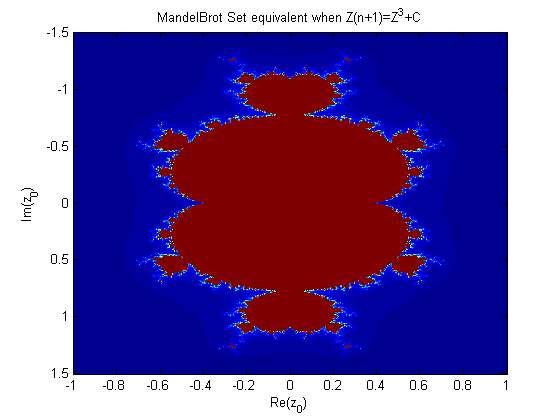

Contents
Question 3
set up a grid of x and y values over a specified range, with specified dimensions that will be used for plotting
xdim = 500; xlow = -1; xhigh = 1; x = linspace(xlow,xhigh,xdim); ydim = 500; ylow = -1.5; yhigh = 1.5; y = linspace(ylow,yhigh,ydim); [XX,YY] = meshgrid(x,y); c = XX + YY*1i; % multiply y values by i to make them imaginary z = c; % starting with z=0 means that the next z value will equal C count = ones(xdim,ydim); % count will count the number of z terms that remain within the specified threshhold (ie. "converge") n = 100; % the number of z values we calculate. Tried many different values for n, 100 produced % a plot with sufficient detail, that is produced quickly
Calculate the Z values for the entire grid, and see how many remain below the threshhold
for i = 0:n z = z.^3 + c; %Z(n+1) conv = abs(z) < 2; % Check if the value remains under the threshhold (ie. "Converges") % the threshhold of 2 was decided by starting high and gradually % reducing. A value of 2 produced a satisfactory plot. count = count + conv; % count the amount of z values that remain under threshhold end figure(1) imagesc(x,y,count); % plots values with different colour based on how many z values remain below the threshhold title('MandelBrot Set equivalent when Z(n+1)=Z^3+C'); xlabel('Re(z_{0})'); ylabel('Im(z_{0})');